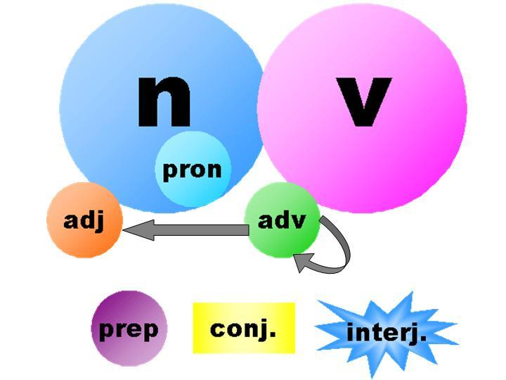
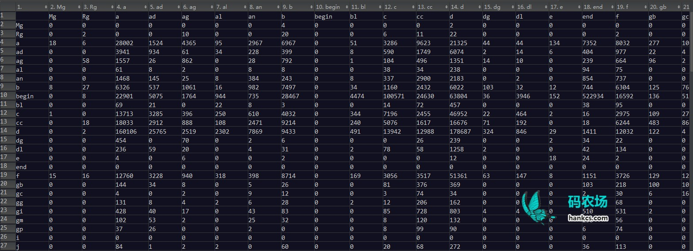

词性标注（Part-of-Speech tagging 或POS tagging)，又称词类标注或者简称标注，是指为分词结果中的每个单词标注一个正确的词性的程序，也即确定每个词是名词、动词、形容词或其他词性的过程。在汉语中，词性标注比较简单，因为汉语词汇词性多变的情况比较少见，大多词语只有一个词性，或者出现频次最高的词性远远高于第二位的词性。据说，只需选取最高频词性，即可实现80%准确率的中文词性标注程序。
利用HMM即可实现更高准确率的词性标注，本文旨在介绍HanLP中的词性标注模块。
开源项目
本文代码已集成到HanLP中开源：https://github.com/hankcs/HanLP
欢迎访问HanLP在线演示与可视化，目前的新词法分析器可以提供比HMM更精准的词性标注。
训练
HanLP中使用了一阶隐马模型，在这个隐马尔可夫模型中，隐状态是词性，显状态是单词。
语料库
训练语料采用了2014人民日报切分语料：
- 人民网/nz 1月1日/t 讯/ng 据/p 《/w [纽约/nsf 时报/n]/nz 》/w 报道/v ，/w 美国/nsf 华尔街/nsf 股市/n 在/p 2013年/t 的/ude1 最后/f 一天/mq 继续/v 上涨/vn ，/w 和/cc [全球/n 股市/n]/nz 一样/uyy ，/w 都/d 以/p [最高/a 纪录/n]/nz 或/c 接近/v [最高/a 纪录/n]/nz 结束/v 本/rz 年/qt 的/ude1 交易/vn 。/w
- 《/w [纽约/nsf 时报/n]/nz 》/w 报道/v 说/v ，/w 标普/nz 500/m 指数/n 今年/t 上升/vi 29.6%/m ，/w 为/p 1997年/t 以来/f 的/ude1 最大/gm 涨幅/n ；/w [道琼斯/ntc 工业/n 平均/a 指数/n]/nz 上升/vi 26.5%/m ，/w 为/p 1996年/t 以来/f 的/ude1 最大/gm 涨幅/n ；/w [纳斯/nrf 达/v 克/q]/nz 上涨/vi 38.3%/m 。/w
- 就/d 12月31日/t 来说/uls ，/w 由于/p 就业/vn 前景/n 看好/v 和/cc [经济/n 增长/v]/nz 明年/t 可能/v 加速/vn ，/w 消费者/n 信心/n 上升/vi 。/w 工商/n 协进会/nis （/w ConferenceBoard/x ）/w 报告/n ，/w 12月/t 消费者/n 信心/n 上升/vi 到/v 78.1/m ，/w 明显/a 高于/v 11月/t 的/ude1 72/m 。/w
- 另据/nz 《/w [华尔街/nsf 日报/n]/nz 》/w 报道/v ，/w 2013年/t 是/vshi 1995年/t 以来/f [美国/nsf 股市/n]/nz 表现/v 最好/d 的/ude1 一年/mq 。/w 这/rzv 一年/mq 里/f ，/w 投资/v [美国/nsf 股市/n]/nz 的/ude1 明智/a 做法/n 是/vshi 追/v 着/uzhe “/w 傻钱/nz ”/w 跑/v 。/w 所谓/v 的/ude1 “/w 傻钱/nz ”/w 策略/n ，/w 其实/d 就是/v 买入/vn 并/cc 持有/v 美国/nsf 股票/n 这样/rzv 的/ude1 普通/a 组合/vn 。/w 这个/rz 策略/n 要/v 比/p [对冲/vn 基金/n]/nz 和/cc 其它/rz 专业/n 投资者/nnd 使用/v 的/ude1 更为/d 复杂/a 的/ude1 投资/vn 方法/n 效果/n 好/a 得/ude3 多/a 。/w （/w 老/a 任/v ）/w
单词词性频次词典
统计所有单词的各个词性的出现频次，得到核心词典：
- 爱 v 3622 vn 598
- 爱因斯坦 nrf 20
- 爱国 a 178
- 爱国主义 n 68
- 飙升 v 200 vn 8
- 顺风 vi 27 vn 2
- 顺风吹火 i 1
- 顺风球 n 1
- 顺风耳 n 4
- 顺风车 nz 126
- 购 v 217 vg 151 vn 106
- 购书 v 7 vn 5
- 购买 v 3875 vn 637
- 购买人 n 7
- 购买力 n 42
- 购买户 n 1
- 购买欲 n 1
- 购买群 n 1
- 购买者 n 93
- 购买证 n 1
- 购入 v 115 vn 18
- ……
从词典可以看出，汉语词汇的确词性单一，且存在歧义的词性多集中在“动词v”和“名动词vn”上。另外，我拿到的2014人民日报切分语料感觉没有经过严格的人工校对，许多单词词性单一，且存在不少错误。也许等我有机会（经济实力或学术背景），可以拿更高质量的语料来训练。所幸HanLP同时维护了一个通用的语料处理包，暂且埋下伏笔吧。
转移矩阵
统计每个标签的转移频次，得到如下转移矩阵：

事实上，完整的转移矩阵非常大，请下载观看： 词性标注 转移矩阵.xls
词性标注 转移矩阵.xls
标注
利用上述转移矩阵和核心词典词频可以计算出HMM中的初始概率、转移概率、发射概率，进而完成求解。关于维特比算法和实现请参考《通用维特比算法的Java实现》。
测试
以“我的爱就是爱自然语言处理”为例：
- String text = "我的爱就是爱自然语言处理";
- Segment segment = new Segment();
- System.out.println("未标注：" + segment.seg(text));
- segment.enableSpeechTag(true);
- System.out.println("标注后：" + segment.seg(text));
输出
未标注：[我/rr, 的/ude1, 爱/v, 就是/v, 爱/v, 自然语言/gm, 处理/vn]
标注后：[我/rr, 的/ude1, 爱/vn, 就是/v, 爱/v, 自然语言/gm, 处理/vn]
前后两个“爱”的词性并不相同，前者是名动词，后者是动词。
再比如
未标注：[教授/nnt, 正在/d, 教授/nnt, 自然语言/gm, 处理/vn, 课程/n]
标注后：[教授/nnt, 正在/d, 教授/v, 自然语言/gm, 处理/vn, 课程/n]
HanLP的词性标注初见成效。
HanLP词性标注集
HanLP使用的HMM词性标注模型训练自2014年人民日报切分语料，随后增加了少量98年人民日报中独有的词语。所以，HanLP词性标注集兼容《ICTPOS3.0汉语词性标记集》，并且兼容《现代汉语语料库加工规范——词语切分与词性标注》。
| HanLP词性标注集 | |
|---|---|
a形容词 |
|
ad副形词 |
|
ag形容词性语素 |
|
al形容词性惯用语 |
|
an名形词 |
|
b区别词 |
|
begin仅用于始##始 |
|
bg区别语素 |
|
bl区别词性惯用语 |
|
c连词 |
|
cc并列连词 |
|
d副词 |
|
dg辄,俱,复之类的副词 |
|
dl连语 |
|
e叹词 |
|
end仅用于终##终 |
|
f方位词 |
|
g学术词汇 |
|
gb生物相关词汇 |
|
gbc生物类别 |
|
gc化学相关词汇 |
|
gg地理地质相关词汇 |
|
gi计算机相关词汇 |
|
gm数学相关词汇 |
|
gp物理相关词汇 |
|
h前缀 |
|
i成语 |
|
j简称略语 |
|
k后缀 |
|
l习用语 |
|
m数词 |
|
mg数语素 |
|
Mg甲乙丙丁之类的数词 |
|
mq数量词 |
|
n名词 |
|
nb生物名 |
|
nba动物名 |
|
nbc动物纲目 |
|
nbp植物名 |
|
nf食品，比如“薯片” |
|
ng名词性语素 |
|
nh医药疾病等健康相关名词 |
|
nhd疾病 |
|
nhm药品 |
|
ni机构相关（不是独立机构名） |
|
nic下属机构 |
|
nis机构后缀 |
|
nit教育相关机构 |
|
nl名词性惯用语 |
|
nm物品名 |
|
nmc化学品名 |
|
nn工作相关名词 |
|
nnd职业 |
|
nnt职务职称 |
|
nr人名 |
|
nr1复姓 |
|
nr2蒙古姓名 |
|
nrf音译人名 |
|
nrj日语人名 |
|
ns地名 |
|
nsf音译地名 |
|
nt机构团体名 |
|
ntc公司名 |
|
ntcb银行 |
|
ntcf工厂 |
|
ntch酒店宾馆 |
|
nth医院 |
|
nto政府机构 |
|
nts中小学 |
|
ntu大学 |
|
nx字母专名 |
|
nz其他专名 |
|
o拟声词 |
|
p介词 |
|
pba介词“把” |
|
pbei介词“被” |
|
q量词 |
|
qg量词语素 |
|
qt时量词 |
|
qv动量词 |
|
r代词 |
|
rg代词性语素 |
|
Rg古汉语代词性语素 |
|
rr人称代词 |
|
ry疑问代词 |
|
rys处所疑问代词 |
|
ryt时间疑问代词 |
|
ryv谓词性疑问代词 |
|
rz指示代词 |
|
rzs处所指示代词 |
|
rzt时间指示代词 |
|
rzv谓词性指示代词 |
|
s处所词 |
|
t时间词 |
|
tg时间词性语素 |
|
u助词 |
|
ud助词 |
|
ude1的 底 |
|
ude2地 |
|
ude3得 |
|
udeng等 等等 云云 |
|
udh的话 |
|
ug过 |
|
uguo过 |
|
uj助词 |
|
ul连词 |
|
ule了 喽 |
|
ulian连 （“连小学生都会”） |
|
uls来讲 来说 而言 说来 |
|
usuo所 |
|
uv连词 |
|
uyy一样 一般 似的 般 |
|
uz着 |
|
uzhe着 |
|
uzhi之 |
|
v动词 |
|
vd副动词 |
|
vf趋向动词 |
|
vg动词性语素 |
|
vi不及物动词（内动词） |
|
vl动词性惯用语 |
|
vn名动词 |
|
vshi动词“是” |
|
vx形式动词 |
|
vyou动词“有” |
|
w标点符号 |
|
wb百分号千分号，全角：％ ‰ 半角：% |
|
wd逗号，全角：， 半角：, |
|
wf分号，全角：； 半角： ; |
|
wh单位符号，全角：￥ ＄ ￡ ° ℃ 半角：$ |
|
wj句号，全角：。 |
|
wky右括号，全角：） 〕 ］ ｝ 》 】 〗 〉 半角： ) ] { > |
|
wkz左括号，全角：（ 〔 ［ ｛ 《 【 〖 〈 半角：( [ { < |
|
wm冒号，全角：： 半角： : |
|
wn顿号，全角：、 |
|
wp破折号，全角：—— －－ ——－ 半角：— —- |
|
ws省略号，全角：…… … |
|
wt叹号，全角：！ |
|
ww问号，全角：？ |
|
wyy右引号，全角：” ’ 』 |
|
wyz左引号，全角：“ ‘ 『 |
|
x字符串 |
|
xu网址URL |
|
xx非语素字 |
|
y语气词(delete yg) |
|
yg语气语素 |
|
z状态词 |
|
zg状态词 |
|
能否只用词性标注呢，标注已经分好词的词性，只用hanlp词性标注。分词，词性能分开吗？
我想搜看看有没有人做出能快速标出特地词性的网页呢，搜到这篇文章，留言标记。
你好，hanks，在hanLP中的词典，都是手工完成的吗？
等价的
源码中: P(to|from)＝λP(to)+(1-λ)P(to|from)
你说的: P(to|from)＝λP(from)+(1-λ)P(to|from)
博主在处理时，一头一尾都加了额外的标签"begin"和"end"
每条分词路径，从求和的角度来看，源码中无非是额外加上了P("begin")，你说的则是额外加上了P("end")
都加了一个常量，不影响各条分词路径总cost的比较
博主，发现时间词性好像不能解析啊。比如说“1月1日”在分词之后没有产生“1月1日/t” 而是“ 1/m, 月/q, 1/m, 日/ag”
是不是有开关没有打开呢？
你好，hankcs，仔细查看了你的代码发现，你的基于HMM的词性标注算法，也就是特化版的求解HMM模型的方法compute有问题，求出的解未必是全局最优解，但可以作为近似最优解。
你好，感谢反馈。如果你认为的确有问题，欢迎提交pull request并注明具体为什么要这么改。
对 我也发现了
你们说的是preItem.confirmNature(pre);的时机过早对吧。按标准流程必须构造L*N的二维前驱数组，L是句子长度，N是词性个数，最后按前驱数组回溯最短路径。事实上，我认为这个代价是不必要的，汉语词性的影响力应该是局部的，不会传播那么远，所以我简单地选取了2为决策长度。
“你喜欢吃苹果吗？”—这句话把“吃苹果”当成一个词了，怎么会这样？
https://github.com/hankcs/HanLP/issues/148
不错啊，谢谢分享
为什么我的评论老看不到？？？
“今天”和“明天”的词性为何不同，请问该怎么改成一致
https://github.com/hankcs/HanLP/issues/118#issuecomment-171179490
想问一下有不有实词虚词这样的粗粒度的分类
Ctrl+F
博主您好，想问一下HanLP的词性标注用的是哪个版本的标注格式？谢谢~
词语标注集兼容《ICTPOS3.0汉语词性标记集》
词语标注集兼容《现代汉语语料库加工规范——词语切分与词性标注》
hankcs你好，首先，感性你提供的源码。在看你的隐马词性标注这块，对于转移概率的计算，
double frequency = matrix[from][to] + 1e-8;
transititon_probability[from][to] = -Math.log(frequency / totalFrequency); 个人认为，这句代码计算的不是转移概率，而是p(ti,ti-1).转移概率应该是：p(ti|ti-1) = p(ti,ti-1)| p(ti-1). 但是我测试了一下，实际上，按transititon_probability[from][to] = -Math.log(frequency / totalFrequency)计算的转移概率，正确率要比我改过的要好。但是，找不到比较好的解释。拜问？
你好，这在哪个类里面？我需要看一下上下文
segment.enableSpeechTag(true); 这个找不到相应的方法，不知道这是什么原因
segment.enablePartOfSpeechTagging(true);
我跟踪了hanlp代码，没看到可以自定义词性的地方。也许是我没看完整，求博主指导
词性是enum类型，不是string，所以你需要往Nature enum类里面加自定义词性
我在Nature enum里添加了自定义词性，在词典里添加了自定义词条，但是没有结果
删缓存
核心词典优先级更高，确保不要冲突
博主你好，使用CRF进行分词后启用词性标注后发现有些词的词性为null，这个是为什么呢？[梁/n, 咏琪/null, 是/vshi, 谁/ry, ？/w]
识别到新词：咏琪
[梁咏琪/nr, 是/vshi, 谁/ry, ？/w]，解决这个问题是否需要启用命名实体识别或者在核心词典中添加相应的词和词性标注？
null表示这个词不在词典中，目前CRF分词器的效果还有待提高，也不支持命名实体识别，请尽量使用效果稳定的Viterbi分词器，或者关注未来的更新。
想请教您一下，如果是海量的文本统计词频，是怎么统计的,是分批统计结果吗？如果有重复的句子需要去重吗？
用trie树就行了，再海量的文本也扛得住。不用去重
请问下 有无完整的从词典到初始矩阵，状态矩阵，到转移矩阵的例子，
从大文本讲 如果文本里面有|V|个单词 一般是好几十万，那么这个矩阵将会非常大，会不会维数灾难。
等HanLP正式开源后，你就可以看到从训练到标注的完整代码。
不会，转移矩阵的大小是固定的(约100*100)，虽然词性总个数有大约100个，设为p，但每个词i的词性只有两三个（设为p_i)，假设识别n个词的词性，只需开一个二维double [p_i]的数组就可以跑Viterbi算法了。
我详细看了下 你写的呢个威特比例子 关键是从pos-》word那个矩阵超级大，在词性预测中 应该按照你说的每个词i的词性只有两三个（设为p_i) 不需要所有词性到word的映射，我想在这里可以做逻辑处理 减少计算量，不知道是不是。
希望你的hanlp早日出 过年有时间看下。
你说的发射概率矩阵对吧，也就是我写的那个double nprob = V[t – 1][y0] * trans_p[y0] * emit_p [obs ];里面的emit_p。
这个问题我早就注意到了，HanLP的词性标注的Viterbi方法是特别优化过的，发射概率是动态计算的：
cost = total + transformMatrixDictionary.transititon_probability[pre.ordinal()][cur.ordinal()] – Math.log((item.attribute.frequency + 1e-8) / transformMatrixDictionary.getTotalFrequency(cur));
关于发布时间，应该在年内。